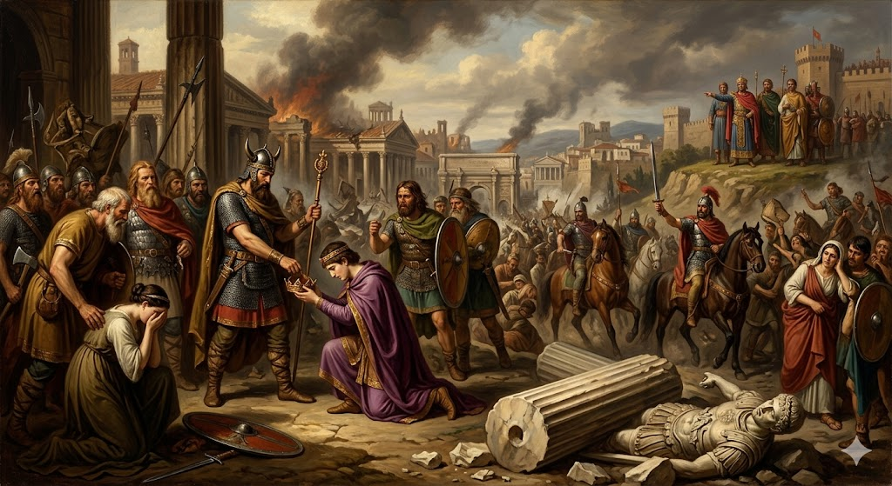

ca. 800 v.C. – 476
De Klassieke Oudheid is de indrukwekkende periode waarin de Grieken en de Romeinen de
hoofdrol speelden in Europa en rond het Middellandse Zeegebied. Dit tijdperk loopt van
ongeveer 800 v.C., met de opkomst van de eerste Griekse stadstaten, tot de val van het
West-Romeinse Rijk in 476.
Het wordt beschouwd als de bakermat van onze huidige westerse maatschappij omdat de
fundamenten van onze cultuur hier werden gelegd. De Grieken leerden ons hoe we kritisch
kunnen nadenken over de wereld door de ontwikkeling van de wetenschap en de filosofie,
en zij gaven ons het revolutionaire idee van de democratie. De Romeinen zorgden vervolgens
voor een ongekende organisatie en eenheid door hun indrukwekkende wetten, hun enorme
wegennetwerk en hun taal, het Latijn, waaruit talen zoals het Frans en het Spaans later
zijn ontstaan.
In onze eigen streken (België/Gallië) liet de Klassieke Oudheid diepe sporen na. Door de
veroveringen van Julius Caesar raakte onze regio verbonden met dit wereldrijk. Dankzij de
Romeinen ontstonden hier de eerste stenen steden, een georganiseerd bestuur en een
bloeiende handel. Hoewel het Romeinse Rijk uiteindelijk ten onder ging, vormen hun
uitvindingen, kunst en politieke ideeën nog steeds de fundering van ons dagelijks leven.

Rond 776 v.C. werden de eerste Olympische Spelen gehouden, wat het begin van de Griekse bloeiperiode markeert. Griekenland was geen eenheid, maar bestond uit honderden onafhankelijke stadstaten of poleis. Hoewel ze vaak onderling vochten, deelden ze dezelfde taal en hun polytheïstische geloof in de goden op de Olympus. Athene werd beroemd om de uitvinding van de democratie, terwijl Sparta bekendstond om zijn strenge militaire opvoeding.
De 5de eeuw v.C. wordt de "Gouden Eeuw" van Athene genoemd. In deze tijd werden de mooiste tempels gebouwd. Je moet de drie zuilenorden uit deze periode kunnen herkennen aan hun kapiteel: de sobere Dorische stijl met een platte bovenkant, de elegante Ionische stijl met krullen (voluten), en de rijkelijk versierde Korinthische stijl met acanthusbladeren.

In 57 v.C. viel de Romeinse generaal Julius Caesar onze streken binnen. De lokale Galliërs (Kelten), onder leiding van figuren zoals Ambiorix, boden dapper weerstand, maar konden niet winnen van de goed getrainde Romeinse legioenen. Onze gebieden werden onderdeel van het rijk, wat leidde tot de Gallo-Romeinse cultuur: een mix van Keltische tradities en Romeinse vernieuwingen zoals stenen steden en centrale verwarming.
Na eeuwenlang een republiek te zijn geweest waarin de Senaat de macht had, werd Rome rond 27 v.C. een keizerrijk onder Augustus. Rome groeide uit tot een wereldrijk dat de hele Middellandse Zee beheerste. De Romeinen blonken uit in techniek: ze bouwden wegen, aquaducten en amfitheaters. Door de romanisering namen de veroverde volkeren de Romeinse wetten, gewoonten en de taal (het Latijn) over.
De Romeinse maatschappij was strikt verdeeld in groepen met verschillende rechten. Je had de Patriciërs (de rijke adel) en de Plebeiers (het gewone volk van boeren en handelaars). Helemaal onderaan stonden de Slaven, die als eigendom werden beschouwd en geen rechten hadden. Deze ongelijkheid op basis van geboorte en afkomst noemen we een standensamenleving.
Na eeuwen van vervolging veranderde de positie van het christendom volledig onder keizer Theodosius. In 380 n.C. werd het christendom verklaard tot de officiële staatsgodsdienst. Dit betekende dat het monotheïsme (het geloof in één god) de oude Romeinse en Griekse goden verving. De kerk kreeg hierdoor een centrale rol in het bestuur en het dagelijks leven in Europa.

Het jaar 476 n.C. is een van de belangrijkste jaartallen in de geschiedenis. Door economische problemen, interne ruzies en invallen van Germaanse stammen stortte het rijk in en werd de laatste Romeinse keizer afgezet. Dit jaar markeert het officiële einde van de Klassieke Oudheid en de start van de Middeleeuwen. Alleen het Oost-Romeinse Rijk (Byzantium) bleef nog bestaan.